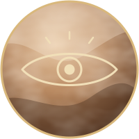
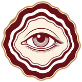

أكثر من توقعات .. رحلة إلى ذاتك
اكتشف خريطتك الداخلية
في AQEQ ASTRO نؤمن أن علم الفلك ليس مجرد معرفة بالمستقبل، بل هو أداة عميقة لفهم نفسك، واكتشاف إمكانياتك، والعيش بانسجام أكبر.
من عرف نفسه، عرف طريقه
- وعي أعمق
- قرارات أكثر اتزانًا
- حياة أكثر انسجامًا
الخرائط والقراءات
السماء الآن
العبور الحالي اضغط على أي كوكب لقراءتهالسماء الآن
تابع مواقع الكواكب الحقيقية لحظة بلحظة، واحسب خريطة السماء لأي تاريخ ومدينة في العالم.

انقر على أي برج في الدائرة الفلكية لاستعراض خصائصه وقراءته
اكتشف السماء كلهاالكواكب والقمر وأحداث الشهريومك
رقم اليوم · علم الأعداد
اقتراح اليوم:
محتوى مميز
عرض كل المحتوى المميز
هويتك الكونية
هويتك الكونية
ملخص فوري لبصمتك الفلكية والرقمية المحسوبة من تاريخ ميلادك الحالي.
البرج الشمسي♈ برج الحمل
مسار الحياةالرقم الأساسي
مصفوفة القدرالأركانا الحاكمة
البصمة الفلكية والرقمية السريعة
أدخل تاريخ ميلادك لاستخراج خلاصة فورية
رؤى وقراءات شخصية
احسب خريطة ميلادك أو مصفوفة قدرك أو مسار حياتك لحفظ قراءاتك الشخصية وعرضها هنا.
الملف الشخصي والتقرير المتكامل
استكشف كل الحاسبات الفلكية والرقمية مجانًا وبصورة فورية، وأنشئ حسابًا لحفظ بياناتك وقراءاتك واستعادتها في أي وقت.
بطاقتك التأسيسية
خلاصة فورية من تاريخ ميلادك. اضغط على أي أداة لفتح التقرير الكامل مباشرة.
✕
طاقتك المركزيةحقيقتك الفطرية حين تكتمل قوتكالعقدة الكرميةالامتحان المتكرر ومفتاح تحررك
شفرة الوفرة والمالأين تهدر طاقتك الماليةطاقة العلاقاتلماذا تنجذب لأشخاص بعينهم
عقيق أسترو · مصفوفة القدر
مصفوفة القدر
ما هو الدرس الصعب الذي يتكرر في حياتك دائماً؟
مصفوفة القدر هي الشفرة الرقمية الهندسية لتاريخ ميلادك. تكشف لك العقدة الكرمية التي تعطّل اتزانك، وأبواب تدفق المال، والسر الحقيقي وراء اختياراتك العاطفية.
ماذا ستكتشف داخل مصفوفتك؟
- ✦العقدة الكارميةالدرس المتكرر في علاقاتك وقراراتك.
- ✦طاقة المالالباب المالي والمسار الأنسب لوفرتك.
- ✦قوة الروحموهبتك الفطرية وطاقتك المحورية.
- الطاقة المركزيةجوهر شخصيتك ومصدر قوتك
- المحاورتوازن بين أطياف حياتك
- الدروس الكرميةحوّل التحديات إلى قوة
- قنوات المال والعلاقاتكشف مسارات الوفرة والارتباط
ماذا تكشف لك مصفوفتك؟
- الطاقة المركزية ورسالتك في الحياة
- مواهبك وقدراتك الطبيعية
- التحديات والدروس الكرمية
- قنوات المال والعلاقات والفرص المناسبة لك
✕
عقيق أسترو · مسار الحياة
مسار حياتك والأرقام الكونية
هل تشعر أنك تبذل طاقة هائلة في اتجاه، بينما صوت خفي يخبرك أن وجهتك الحقيقية في مكان آخر؟ تاريخ ميلادك يحمل شفرة اتجاهك الأكبر: إيقاع سنواتك ومحطات التحول والرسالة التي جئت لتؤديها.
الأرقام لغة كونية
ترشدك إلى ذاتك الحقيقية.
اكتشف إيقاع رحلتك، وافهم الرسائل التي تحملها كل مرحلة في حياتك، لترى الصورة الأكبر بوضوح.
✕
عقيق أسترو · توافق مسار الحياة
توافق مسارات الحياة
لكل شخص إيقاع داخلي يتحرك به، وحين يلتقي إيقاعان تظهر مساحات تناغم ومساحات احتكاك. أدخل تاريخ ميلاد الطرفين لترى كيف يلتقي مساراكما.
ما توافق المسارات؟
رقم مسار حياتك هو الإيقاع الذي تتحرك به. حين يلتقي إيقاعان تظهر مساحات تناغم ومساحات احتكاك. هذه القراءة تريك كيف يتلاقى مساراكما في الرؤية والقيم وإيقاع اليوم، سواء كانت العلاقة حبًّا أو أهلًا أو عملًا.
كيف تستفيد منها؟
1
اختر نوع العلاقة
يتغيّر التركيز بين العاطفة والأهل والعمل حسب اختيارك.
2
اقرأ الاختلاف بهدوء
الاختلاف بين رقمين ليس عيبًا، هو ما يجعل كلًّا منكما يرى ما لا يراه الآخر.
✕
عقيق أسترو · توافق المصفوفة
توافق مصفوفة القدر
لكل واحد منكما مصفوفة قدر خاصة، وحين تلتقيان تتولد مصفوفة ثالثة هي مصفوفة العلاقة نفسها. أدخل تاريخ ميلاد الطرفين لترى ما يجمعكما وما تتعلمانه معًا.
ما توافق المصفوفة؟
تُجمع أركان مصفوفتيكما، اليوم والشهر والسنة، ثم تُختزل إلى طاقات المصفوفة الاثنتين والعشرين، فتظهر مصفوفة ثالثة هي مصفوفة العلاقة. منها تُقرأ نقطة اللقاء ونقطة الاحتكاك ومنطقة الأمان، وما تبنيانه معًا.
كيف تستفيد منها؟
1
أدخل التاريخين كاملين
اليوم والشهر والسنة لكل طرف، والاسم اختياري لتظهر القراءة باسميكما.
2
اقرأ المصفوفة الثالثة بهدوء
الأرقام لا تحكم على العلاقة. هي تسمّي ما يتكرر بينكما لتتعاملا معه بوعي.
✕
تقارير مميزة
عقيق · خطوتك التالية
عقيق أسترو · مصفوفة الطفل
مصفوفة الطفل
أدخل تاريخ ميلاد الطفل لتقرأ طباعه ومواهبه وما يحتاجه من أهله، من خريطته الرقمية الخاصة.
ما مصفوفة الطفل؟
هي خريطة ميلاد الطفل الرقمية. تُحسب من يوم الميلاد وشهره وسنته، وتتحول إلى طاقات المصفوفة الاثنتين والعشرين، ومنها تُقرأ طباعه الظاهرة وما يختبئ خلفها، ومواهبه، وما يحتاجه من أهله.
كيف تستفيد منها؟
1
أدخل تاريخ الميلاد كاملًا
اليوم والشهر والسنة، والاسم اختياري ليظهر في القراءة.
2
اقرأها بهدوء
الأرقام تصف ميلًا وطبعًا، ولا تحكم على الطفل. هي تساعدك على فهمه والتعامل معه بوعي.
✕
عقيق أسترو · خريطة الميلاد
الخريطة الفلكية لميلادك
هل شعرت يوماً أن ما يراه الناس فيك لا يشبه ما تشعر به وحدك؟
خريطتك ليست مجرد برجك المعروف، بل صورة السماء لحظة ولادتك. أدخل بياناتك لنكشف لك بلغة بسيطة سبب حيرتك المفاجئة ونقاط قوتك التي لم ينتبه لها أحد بعد.
- مواقع الكواكبتحديد دقيق لمواقع الكواكب في الأبراج والبيوت.
- البيوت الفلكيةتحليل مجالات حياتك الاثني عشر.
- الجوانبفهم التفاعلات والروابط بين الكواكب.
- العناصر والطبائعتوزيع الطاقة بين العناصر الأربعة (النار، الأرض، الهواء، الماء).
✕
لك · نافذتك اليومية
لك: نافذتك اليومية
رسالة يومك وتذكير بنمطك والعبورات الكبرى الشغالة في خريطتك أنت تحديدًا، مكتوبة بلغة بسيطة وقريبة منك.
توقعات الأبراج الآن
اختر برجك ليظهر توقعه الكامل الآن، ثم العبورات الجارية وتأثير كل واحد منها عليك. للقراءة الشخصية الدقيقة استخدم حاسبة خريطة الميلاد.

AQEQ ASTROاكتشف أعمق منكمرحبًا بك في عالمك
سجّل دخولك لتجد خرائطك وقراءاتك في مكان واحد.
- توقعات يومية حية من سماء اللحظة
- خريطة ميلادك كاملة
- مسار الحياة
- مصفوفة القدر
تسجيل الدخول مش متاح دلوقتي. حدّث الصفحة وجرّب تاني.
الحساب المسجل
كلمة مرور جديدة
أدخل كلمة مرور جديدة لا تقل عن ٨ أحرف أو أرقام
استثمر في ذاتك
ما الذي لا تراه في نفسك بعد؟
هنا تقارير مميزة مدفوعة تُكتب من خريطتك أنت: ذيلك الكارمي، علاقاتك، مسار حياتك وخريطتك الفلكية. تبدأ بمعاينة مجانية، ثم تفتح التقرير كاملًا أو تحمّله بصيغة PDF.
اطلب تقريركالقراءة الكاملة للخريطة الفلكية
قراءة مفصلة لخريطة ميلادك: الكواكب والبيوت، شخصيتك ونقاط قوتك، والمجالات التي تأخذ أكبر اهتمام. يصلك التقرير على بريد حسابك.
قراءة شخصية
جلسة قراءة لخريطتك أو مصفوفتك أو التاروت بحسب سؤالك. ستُعلن آلية الحجز هنا عند فتح باب الحجوزات.
الكورسات
كورسات تعليمية في الفلك ومصفوفة القدر قيد الإعداد.
- 1سجّل دخولكوأكمل بياناتك الشخصية وبيانات الميلاد
- 2اختر ما يناسبكتقرير أو قراءة أو كورس
- 3حوّل المبلغمحفظة أو إنستاباي أو PayPal
- 4نؤكد ويصلك طلبكالتقرير على بريد حسابك
الدفع بتحويل مباشر من تطبيقك، ولا نطلب بيانات بطاقتك.
عرض كل التقارير المميزة
من علم الفلك الفيدي
ما سيحدث في 2027
هل تشعر أن فصلًا في حياتك يوشك أن يُغلق، وأن بابًا آخر يوشك أن يُفتح؟ خريطتك الفيدية تحمل توقيت كل منهما: الفترة التي تحكمك، وثقل زحل، وعلاقاتك الكارمية، وأين تضع جهدك وماذا تحذر.
ما الفلك الفيدي؟
هو علم هندي قديم يقرأ السماء كما هي في مكانها الحقيقي، ويرى أن عمرك يمرّ بفترات يحكم كل منها كوكب. لا يخبرك بما سيحدث لك حتمًا، بل يريك أي طاقة تحيط بك الآن، فتختار كيف تتحرك داخلها.
كيف تُقرأ سنتك؟
1
الداشا: الفترة التي تحكمك
الفلك الفيدي يقسم عمرك إلى فترات يحكم كل منها كوكب. كوكب فترتك الآن يحدد ما يشغل بالك وما تنجذب إليه هذه السنة.
2
ساديه ساتي: ثقل زحل
حين يمر زحل قرب قمرك تشعر بأن الأمور أبطأ وأثقل، ثم تخف. نخبرك إن كانت سنتك فيها هذا العبور ومتى ينتهي.
3
العلاقات والعمل والمال
نقرأ أين يمر المشتري وراهو فوق خريطتك لنعرف أي الأبواب أقرب، وما الذي يستحق الحذر.
عرض كل التقارير المميزة
تقرير مميز
الذيل الكارمي
ما الدرس الذي يعود إليك كلما ظننت أنك تجاوزته؟
ما الذيل الكارمي؟
هو أثر في خريطتك يشبه خيطًا قديمًا تحمله معك: طريقة في التصرف تكررها دون أن تقرر ذلك، وموقف يعود بأسماء مختلفة. حين تراه بوضوح تبدأ تختار بدل أن تكرر.
كيف تُقرأ أرقامه؟
1
الجذر
أول الخيط. الطاقة التي تحملها وتعود إليها حين تتعب.
2
الفرع
ما يتفرع عن الجذر في علاقاتك وعملك وقراراتك.
3
الظهور
الشكل الذي يظهر به الدرس في سلوكك اليومي، وهو أسهل ما تلاحظه في نفسك.
على مهل، وبكل وضوح
راجع السعر ووسيلة التحويل أولًا. لا يُسحب منك أي مبلغ تلقائيًا، وتأكيد الطلب يتم بعد المراجعة.
الطلبالقراءة الكاملة للخريطة الفلكية
—1. اختر طريقة الدفع
2. حوّل المبلغ
حوّل مبلغ الطلب بالجنيه المصري كما يظهر أعلاه.
اكتب في PayPal ما يعادل مبلغ الطلب بالدولار بحسب سعر الصرف اليوم.
طلبك قيد المراجعة. سنفعّله فور التأكد من التحويل.
طلباتك
لا نطلب بيانات بطاقتك ولا كلمات مرور. التحويل يتم من تطبيقك مباشرة، وتبقى مسؤولًا عن صحة رقم العملية.
✕
التوافق الفلكي
خريطة التوافق الفلكي
أدخل تاريخ ووقت ومكان ميلاد الطرفين لحساب خريطتيهما الفلكيتين، مقارنة اتصالات الكواكب المتبادلة، وبناء الخريطة المركّبة من نقاط المنتصف.
كيف تُقرأ خريطة التوافق؟
كل واحد منكما يحمل خريطة، وحين نضعهما جنب بعض نرى أين تلتقيان بسهولة وأين تحتاجان صبرًا. ما يظهر هنا لا يحكم على العلاقة، هو يوضّح طريقة كل طرف في الحب والكلام والاحتياج، لتفهم الآخر قبل أن تحكم عليه.
ماذا ستجد؟
1
الانسجام
المواضع التي ترتاح فيها معه بلا مجهود.
2
التحدي
المواضع التي تتكرر فيها الخلافات، ولماذا تتكرر.
3
الخريطة المشتركة
صورة العلاقة نفسها كأنها شخص ثالث، من نقطة المنتصف بينكما.
وقت الميلاد يرفع دقة القراءة، لكن غيابه لا يمنع الحساب.
✕
توافق الطاقة
التوافق الطاقي بين شخصين
قراءة رمزية للعلاقة من الانجذاب الأول لحد الدروس المشتركة. الأقسام دي مستقلة عن قراءة مسار الحياة الفردية، ومش بديل عن الحوار الحقيقي بين الطرفين.
١. المغناطيس والكيمياء مفتوح
إيه اللي شدّكم لبعض من البداية؟ القراءة هنا بتستكشف الانطباع الأول، وسهولة الكلام، والإحساس بالفضول أو الألفة بين الطرفين. الانجذاب ممكن يكون بداية لطيفة، لكنه لوحده مش دليل على التوافق طويل المدى.
سؤال للتأمل: هل بتقدروا تكونوا على طبيعتكم مع بعض، ولا كل طرف حاسس إنه لازم يمثل دورًا معينًا؟
٢. في الحب والبيت تفاصيل القراءة
الجزء ده بيتناول طريقة كل طرف في التعبير عن الحب والاحتياج للاهتمام، وتقسيم مسؤوليات البيت والمال والوقت. مش كفاية إن الحب موجود؛ مهم كمان إن التوقعات تتقال بوضوح بدل ما كل طرف يستنى التاني يفهم لوحده.
سؤال للتأمل: إيه التصرف البسيط اللي بيخلي كل واحد فيكم يحس إنه محبوب ومقدَّر؟
٣. ساحة المعركة تفاصيل القراءة
هنا بنستكشف نقاط الاحتكاك المحتملة: إيه التصرف اللي ممكن يستفز كل طرف، وإزاي الخلاف بيتحول من نقاش عن مشكلة إلى هجوم على الشخص نفسه. الهدف مش تحديد مين الغلطان، لكن معرفة النمط اللي بيتكرر وإيقافه بدري.
خطوة عملية: وقت الخلاف، اتكلم عن تصرف محدد وتأثيره عليك، واطلب تغييرًا واضحًا بدل التعميم أو قراءة النوايا.
٤. سر الكارما: كنتوا إيه لبعض في حياة سابقة؟ قراءة رمزية
في التقاليد الروحانية، ممكن تتقدّم صور رمزية للعلاقة، زي خصمين بيتعلموا المصالحة، أو عاشقين فرّقتهم الظروف، أو معلّم وتلميذ. دي استعارات للتأمل في أنماط العلاقة، وليست معلومات مثبتة عن حياة سابقة أو دليلًا على أن العلاقة مقدَّر لها الاستمرار.
سؤال للتأمل: إيه الدرس اللي العلاقة بتدعوك تتعلمه دلوقتي، سواء كملت أو انتهت؟
٥. الخلاصة ونسبة التوافق تفاصيل القراءة
الخلاصة المفيدة لازم تجمع بين نقاط القوة، وأهم تحدٍّ، والخطوات اللي يقدر الطرفان يجرّبوها. أي نسبة توافق تُعرض في الأداة لازم تتفهم كمؤشر رمزي داخل طريقة الحساب، مش قياس علمي ولا ضمان لنجاح العلاقة.
- اتفقوا على طريقة هادئة لإدارة الخلاف قبل ما يحصل.
- وضحوا احتياجاتكم بدل الاعتماد على التلميحات والتوقعات.
- راجعوا تقسيم المسؤوليات والوقت والمال بشكل عادل ومنتظم.
ملاحظة: دي معاينة محتوى للأقسام الخمسة. ما أضفتش نسبة رقمية مصطنعة أو ادعاءً بأن الأداة تحسب توافقًا كاملًا من غير ربطها بحسابات فعلية.
✕
خرائطك الشخصية
اختر خريطتك
كل خريطة تُحسب وحدها ببياناتك. اختر القراءة التي تناسبك.
الخريطة الفلكية
الكواكب والبيوت والزوايا وقراءتها بالتفصيل.
احسب خريطتي ←مصفوفة القدر
الأنماط والطاقات التي تشكّل حياتك من تاريخ ميلادك.
احسب مصفوفتي ←مسار الحياة
محطات رحلتك ودروسك والاتجاه الذي يناسبك.
اكتشف مساري ←الساجو
أعمدتك الأربعة وعناصرك الخمسة من تاريخ ميلادك.
احسب أعمدتي ←الخريطة الفيدية
الطالع النجمي والمنزل القمري وفترات الداشا.
افتح خريطتي ←الفلك الغربي والتوقيت
✕
عقيق أسترو · الساجو
الساجو
ما الذي تقوله لحظة ميلادك بنظام الأعمدة الأربعة؟
الساجو علم كوري أصله صيني، يحول سنة ميلادك وشهره ويومه وساعته إلى أربعة أعمدة، ثم يقرأ توازن العناصر الخمسة فيها: الخشب والنار والأرض والمعدن والماء. الحساب هنا فعلي بحركة الشمس.
ماذا ستكتشف في أعمدتك؟
- ✦الأعمدة الأربعةالسنة والشهر واليوم والساعة بحروفها الصينية والكورية.
- ✦سيد اليومالرمز الذي يمثلك في الخريطة وسؤال تتأمله.
- ✦توازن العناصرأي العناصر الخمسة يظهر أكثر وأيها يغيب.
✕
العلاقات والشراكات
التوافق: اعرف التوافق بينك وبينه
أدوات قراءة العلاقة في مكان واحد: التوافق الفلكي بين خريطتين، الخريطة المركّبة الناتجة عن اتحادهما، وتوافق مسارات الحياة الرقمية بين شريكين.
خريطة التوافق الفلكي
قارن بين خريطتين فلكيتين لترى مواضع الانسجام ومواضع التحدي بين الكواكب.
افتح الحاسبة ←توافق مسارات الحياة
مقارنة رقمية بين مساري حياة الشريكين في الرؤية والقيم والإيقاع اليومي، للعلاقات العاطفية والعائلية والمهنية.
افتح الحاسبة ←توافق مصفوفة القدر
مصفوفة الشراكة: ما يجمعكما من انسجام ودروس.
افتح الحاسبةمحتوى مميز
قراءات وأفكار لفهم السماء والرموز والذات